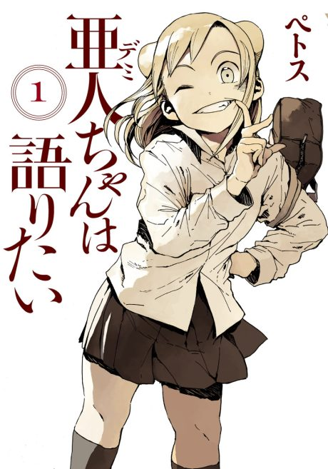

Interviews with Monster Girls
亜人ちゃんは語りたい
A biology teacher wants to learn about demi-humans, and finds four demi-human girls at his school.
After the anime, read the manga from Chapter 33.
7.3AniList score
—Animeter, no votes yet
13episodes, 2 seasons
Rate it or report where you stopped
Anime finished. Where does the manga pick up?
Start at Chapter33
The anime ends with chapter 32 (episode 13 is an anime-original OVA), so start at chapter 33. The manga is finished at 78 chapters.
13278 end
Season 1Start reading here
More like Interviews with Monster Girls
 Unclear6.7
Unclear6.7
 Manga Ch. 247.5
Manga Ch. 247.5
 Manga Ch. 228.7
Manga Ch. 228.7
 Manga Ch. 1047.4
Manga Ch. 1047.4
 Manga Ch. 537.2
Manga Ch. 537.2
 Unclear7.0
Unclear7.0
 Manga Ch. 1078.4
Manga Ch. 1078.4
 Manga Ch. 286.7
Manga Ch. 286.7
 Manga Ch. 788.1
Manga Ch. 788.1
 Manga Ch. 248.1
Manga Ch. 248.1
 Done7.8
Done7.8
 Unclear8.0
Unclear8.0